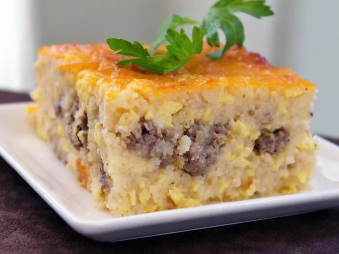

Home
recettes : Casserole de gruau du Sud

Vous allez adorer cette cocotte de gruau avec saucisse hachée et fromage,
surtout si vous êtes du Sud.
Lorsque je la cuisine, je la place dans la mijoteuse pour qu'elle reste chaude.
Il n'y a rien de pire que du gruau froid au petit-déjeuner !
Ingrédients
- 6 tasses d'eau
- 2 tasses de gruau non cuit
- 3 tasses de fromage cheddar râpé, divisé
- ½ tasse de beurre, coupé en morceaux, divisé
- 1 livre de saucisse de porc hachée
Étapes
- Préchauffer le four à 175°C (350°F). Graisser légèrement un grand plat de cuisson
- Portez l'eau à ébullition dans une grande casserole et incorporez le gruau. Réduisez le feu
- Faire cuire les saucisses dans une poêle à feu moyen-vif jusqu'à ce qu'elles soient dorées et friables, 5 à 7 minutes
- Fouetter les œufs et le lait dans un bol
- Versez le mélange de gruau dans le plat de cuisson préparé.